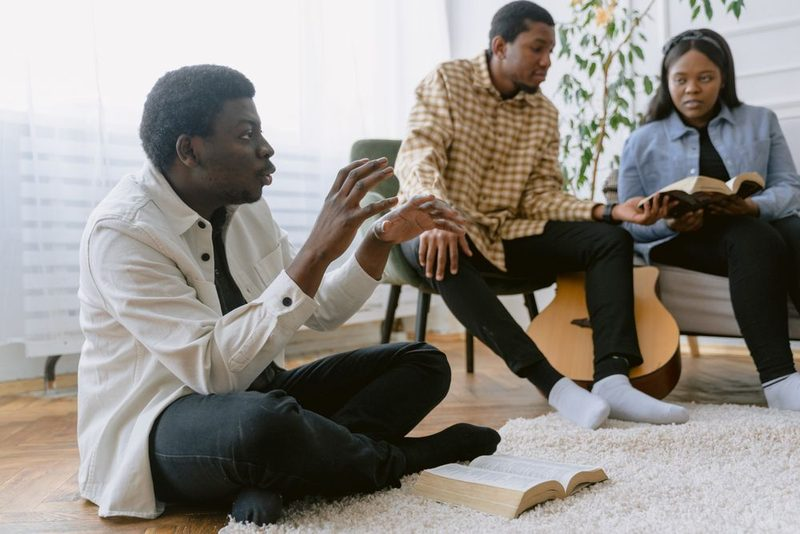
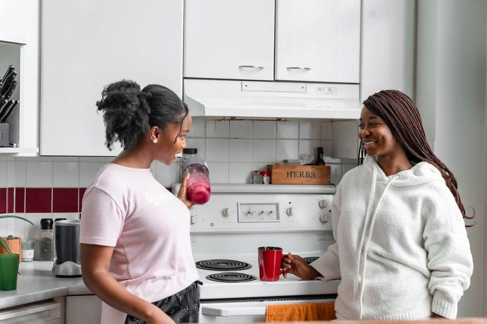

Not Seeing Yourself
You walk into a church and nothing reflects who you are: not the faces, not the images, not the culture. It's hard to feel at home somewhere that doesn't seem to know you exist.
Little Rock, Arkansas
A warm, welcoming faith community in the heart of Little Rock where every soul matters, no matter your background, your story, or where you've been.
You walk into a church and nothing reflects who you are: not the faces, not the images, not the culture. It's hard to feel at home somewhere that doesn't seem to know you exist.
Maybe a church came to your neighborhood once before, then left. You've been burned by organizations that show up with enthusiasm but vanish when things get real.
Life has thrown its punches: job loss, reentry, disability, single parenthood. You need a faith community that meets you where you are, not where they wish you were.
We gather in a cozy, single-family home where you can actually get to know people. We shake every hand. We learn every name. We save you a parking spot.

We know what you might be thinking: "Are these folks serious, or will they disappear in six months?" That's a fair question. We've committed to being here longer than even we think is reasonable, because trust isn't built on a timeline.
We are members of The Church of Jesus Christ of Latter-day Saints. Our doors are open to everyone, regardless of where you come from or what you've been through.
"The closeness allows people to learn, ask questions, and grow, in a small, warm, and welcoming environment."
"When you visit, you're not just another face in a crowd. We meet you at the door, sit with you, answer your questions, and after service, we converse with everyone."
The Inner City Group
Let us know you're coming. Tell us how many are in your group, and we'll reserve a parking spot just for you.
A friendly face will meet you at the door, sit with you, and answer any questions you have. No pressure. No judgment.
After service, we share a refreshment and a short scripture study. It's optional, but most folks stay. The atmosphere is really good.
Last Thursday of Each Month · 6:30 PM
Good food, great people, and no strings attached. Come eat with us and see what this community is all about.
Save Me a Seat
We are members of The Church of Jesus Christ of Latter-day Saints. You might have heard the term "Mormon" before. We no longer go by that name, but yes, we do study the Book of Mormon alongside the Bible. We are Christians who follow Jesus Christ.
Absolutely not. We are a church for everyone: every color, every background, every story. Our community happens to serve a predominantly African American neighborhood, and we want everyone to feel represented and at home. But all are welcome. Period.
Not a chance. We meet in a cozy home, not a massive building, so it's more like visiting a friend than walking into an unfamiliar institution. Someone will greet you at the door, sit with you, and walk you through everything. Most people who visit walk away having had a genuinely great time.
A warm welcome, a short worship service, and fellowship. After service, we usually have a "linger longer" with refreshments, followed by an optional 30-minute scripture study. Come as you are. No dress code, no pressure.
We understand, and we've got you. Let us know when you plan your visit, and we'll work to arrange a ride for you. Just ask.
Yes. Full stop. Many in our community are on a journey of reentry and rebuilding. Your past does not define your place with us. Everyone deserves a fresh start and a community that believes in them.
We are a church of change. No drugs or alcohol, no weapons. Just lots of praise of our Savior and scriptural teaching.
This is about a true and meaningful relationship with your Savior, Jesus Christ, for you, your family, and your future. Don't let another week pass without finding the community that's been waiting for you.